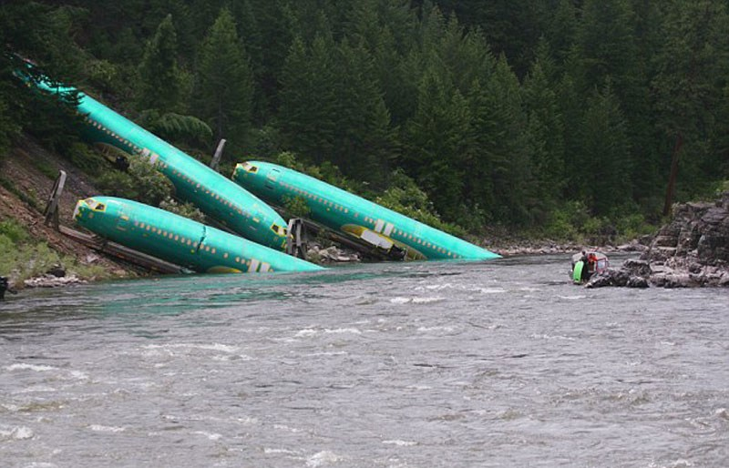

一辆货运列车于当地时间7月3日在美国蒙大拿州西部脱轨。该列车载有3节波音737机身部件。随着列车的脱轨，这3节庞然大物沿着陡峭的河堤，滑入克拉克福克河
最新报道
车载有3节波音737机身脱轨车载有3节波音737机身脱轨车载有3节波音737机身脱轨车载有3节波音737机身脱轨车载有3节波音737机身脱轨车载有3节波音737机身脱轨车载有3节波音737机身脱轨车载有3节波音737机身脱轨车载有3节波音737机身脱轨

一辆货运列车于当地时间7月3日在美国蒙大拿州西部脱轨。该列车载有3节波音737机身部件。随着列车的脱轨在美国蒙大拿州西部脱轨。该列车载有3节波音737机身部件。随着列车的脱轨在美国蒙大拿州西部脱轨。该列车载有3节波音737机身部件。随着列车的脱轨在美国蒙大拿州西部脱轨。该列车载有3节波音737机身部件。随着列车的脱轨在美国蒙大拿州西部脱轨。该列车载有3节波音737机身部件。随着列车的脱轨在美国蒙大拿州西部脱轨。该列车载有3节波音737机身部件。随着列车的脱轨在美国蒙大拿州西部脱轨。该列车载有3节波音737机身部件。随着列车的脱轨
车载有3节波音737机身
一辆货运列车于当地时间7月3日在美国蒙大拿州西部脱轨,随着列车的脱轨
身脱轨车载有3节波音737机身脱轨车载有3节
一辆货运列车于当地时间7月3日在美国蒙大拿州西部脱轨,随着列车的脱轨
车载有3节波音737机身脱轨
